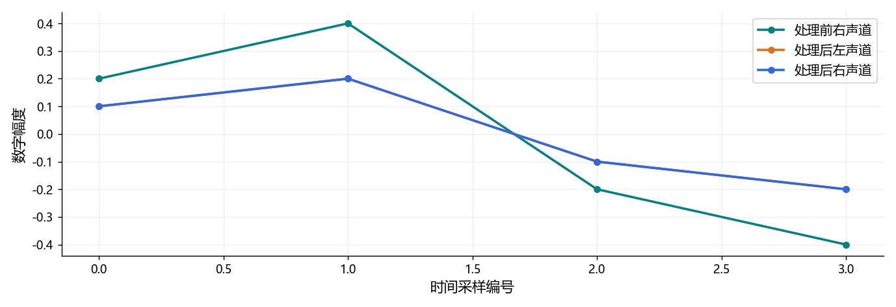

看图理解 · 跟着推演 · 对照真实结果
第04课 · 用四行数据搞懂NumPy的轴
从双声道增益这个小任务出发，看懂shape、axis、广播与分帧。
点播放开始；点右侧小节可跳到不懂的部分。进度保存在当前浏览器。
先看视频，再动手
不必先读完正文。跟着视频暂停预测，看到运行图时解释横轴、纵轴和曲线，再做下面的自测。完整图文保留作查阅；视频讲清本课核心算例，不把看完等同于掌握全部专题。
先修：会运行Python；第03课知道RMS计算步骤。
- 明确时间轴和声道轴的含义
- 能计算每声道RMS并检查输出形状
- 能解释广播、切片与重叠帧
跟着运行：注释代码、实际输出与结果图
下面代码在生成本站时实际执行。这里只是教学小实验，不是完整模型训练或业务设备测评。
import numpy as np
# 行是时间、列是声道；右路幅度是左路两倍
audio = np.array([[0.1, 0.2], [0.2, 0.4],
[-0.1, -0.2], [-0.2, -0.4]], dtype=float)
gains = np.array([1.0, 0.5]) # 每个声道一个增益
adjusted = audio * gains # 从最后一维对齐广播
rms = np.sqrt(np.mean(adjusted ** 2, axis=0))
mono = adjusted.mean(axis=1) # 仅在允许混音时合并声道
index = np.arange(4)
left, right, raw_right = adjusted[:, 0], adjusted[:, 1], audio[:, 1]
# 一个独立的编号示例：窗长4、帧移2，不补零
x = np.arange(10)
frames = np.stack([x[i:i+4] for i in range(0, 7, 2)])
print('输入/输出/单声道:', audio.shape, adjusted.shape, mono.shape)
print('每声道RMS:', rms)
print('切片形状:', audio[:, 0].shape, audio[:, :1].shape)
print('分帧结果:', frames)
本次实际输出
输入/输出/单声道: (4, 2) (4, 2) (4,) 每声道RMS: [0.15811388 0.15811388] 切片形状: (4,) (4, 1) 分帧结果: [[0 1 2 3] [2 3 4 5] [4 5 6 7] [6 7 8 9]]

闭卷自测：(48000,2)的时间在前音频，采样率48 kHz。时长、总元素数、每声道RMS输出形状是什么？
时长1秒，总元素数96000；沿axis=0对时间归约，RMS输出形状(2,)。
逐字讲稿 · 可定位回看
今天只用四个时刻、两个声道。左声道是零点一、零点二、负零点一、负零点二，右声道恰好是两倍。任务是把右路减半，并分别计算两路均方根。
这组输入很小，方便手算，而且两路故意不同。如果两路输入完全一样，一些轴写错的程序也可能看起来正常，测试就发现不了问题。
NumPy并不知道哪列叫左声道。时间在行、声道在列，是我们给接口规定的含义。以后接别人的库，第一件事就是核对它是否遵守相同约定。
这里形状是四乘二，意思是第一维四个时刻，第二维两个声道。维数是二，元素总数是八。每个元素采用浮点类型存储。
长度函数只返回第一维长度，所以是四，不是八。总元素数才是八。计算时长应使用时间维的长度除以采样率，不能随手用总元素数。
如果另一个库返回二乘四，可能是声道在前、时间在后，并不一定数据坏了。应该按文档显式转换一次，再让后面的处理都用统一布局。
先想输出应该有几个数。每个声道一个均方根，应该输出两个数，所以要把时间方向合并，保留声道方向。在本课布局里就是沿零号轴平均。
如果沿一号轴平均，左右声道被合并，每个时刻留下一个数，结果长度为四。这是一种混音操作，不是每声道音量统计。
如果平均时根本不写轴，所有八个数会一起合并，只返回一个值。程序可能完全不报错，但已经不是我们要的任务。先预测输出形状，能抓住这类错误。
增益数组是一和零点五，形状只有二。与四乘二的音频相乘时，从最后一维对齐，两个增益分别作用到左右两列，并重复用于每个时刻。
因此左路不变，右路减半。我们没有复制四份增益，也没写两个循环。广播让代码简洁，但前提是你已经想清楚维度对应关系。
如果要每个时刻一个增益，通常需要四乘一的形状，而不是单独长度四。末尾这个一表示该时刻的增益广播到所有声道。缺少它会报错，或者在巧合尺寸下算错。
前四行定义四乘二输入，第五行定义每声道增益，第六行相乘。右路原来是左路两倍，乘零点五以后应与左路完全一致。
第七行先平方，再沿时间轴平均，最后开根号，输出两个数。第八行沿声道平均得到四点单声道，这只在允许混音的情况下才做。
后面另外用零到九的编号演示重叠分帧。它不是本图四点音频的延长，也不是模型输出。把两组小例子的输入分开，能避免误认图和代码之间的关系。
图中处理前右路幅度较大；处理后左右两条线重合。这不是少画了一条，而是根据我们的构造，两路数据确实相同。
平方后四个数是零点零一、零点零四、零点零一、零点零四，平均零点零二五，开根号约零点一五八一。两个声道输出都应是这个值。
单声道混音也等于左路四个数，因为处理后两路相同。真实录音如果左右不同相或有时延，平均可能抵消目标；这组算例不能证明声道平均永远合理。
取第一列时，冒号逗号零会得到一维长度四；用冒号逗号冒号一，则保留第二维，形状是四乘一。它们都含四个数，但维度不同。
如果后面要乘一个声道增益向量，四乘一可能扩展出一个矩阵，而一维数组会按另一套末维匹配规则处理。不要只看打印出来的数差不多，就忽视形状。
切片还可能是原数组的视图。修改截取片段可能同时改变原数据。做干净参考与带噪版本时，必要时明确复制，避免以为只改了输入，实际把答案也污染了。
现在看第二个小例子，原数据是零到九。第一帧取零、一、二、三；帧移为二，第二帧从二开始，取二、三、四、五。
数字二和三在两帧都出现，这是重叠，不是生成了新的声音信息。接下来从四和六开始，所以总共四帧，矩阵形状四乘四。
注意同样是二维数组，列现在代表帧内位置，不是声道。如果看到二维就沿一号轴混音，就会把每一帧的采样平均掉。物理含义必须跟着布局走。
一万六采样率下，二十五毫秒窗口有四百点，十毫秒帧移有一百六十点。只保留完整帧且不补零，一秒波形会得到九十八帧。
公式里的N是总点数，L是窗长，H是帧移。先减去第一帧长度，再看还能前进多少次，最后把第一帧加回来，所以开头有一个一。
输入短于一帧时要明确补零还是跳过；中心补零的库也可能返回不同帧数。此外，同一录音的重叠帧不能随机分到训练和测试两边，否则会造成数据泄漏。
暂停回答：形状四万八千乘二的录音，采样率四万八千，时长与总元素数各是多少？答案是一秒和九万六千，不要把双声道误算成两秒。
真实整数PCM计算前先转浮点，再平方和取绝对值，避免定长整数溢出。还要拒绝空数组、非正采样率和非有限数，而不是把所有异常默默改成零。
课后写一个音频体检函数，用单声道、双声道、空输入和非数输入测试。遇到广播报错先打印各数组形状，遇到结果不对先问输出应保留哪个维度。
适用边界与参考正文
四点算例验证轴和广播，不代表真实双声道总可以直接平均；分帧例子独立于绘图的四点信号，真实工程还需边界与异常输入处理。
图、公式、代码结果均由本站制作；旁白是本地中文语音合成，不是教师真人录音，也不是 NotebookLM 生成。没有向 Google 上传项目材料。